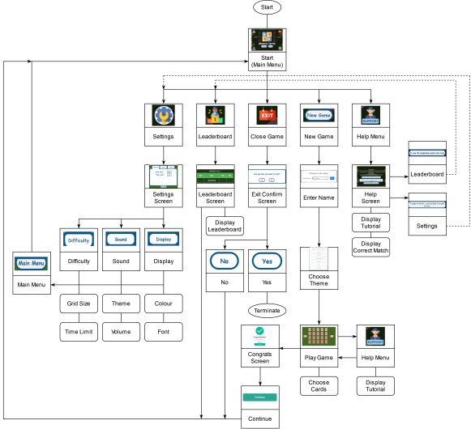
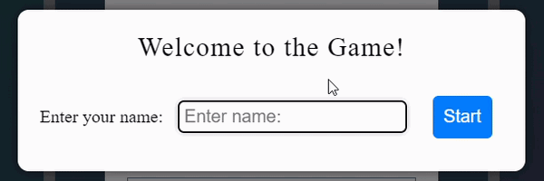
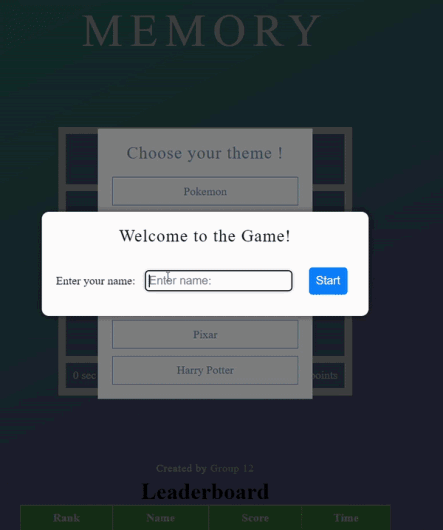
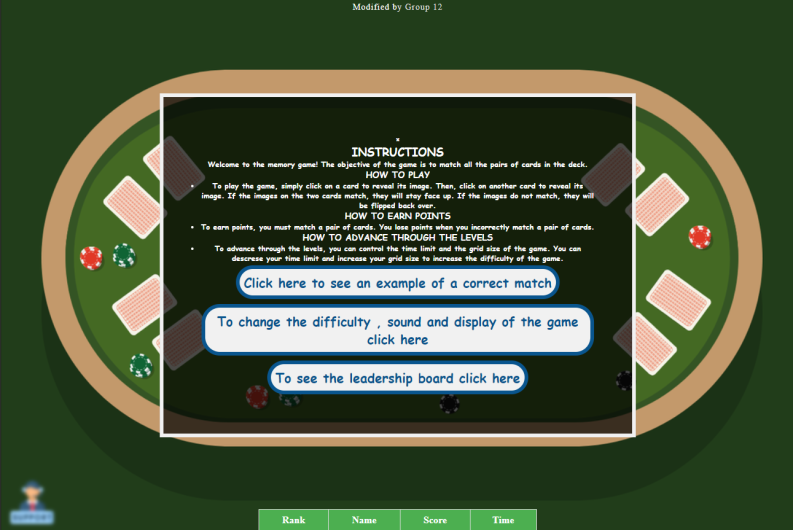
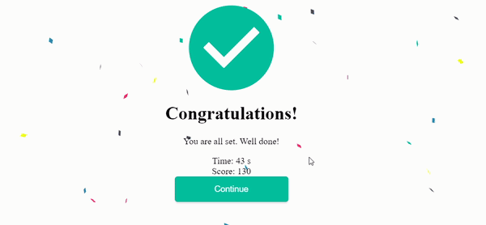

Executive Summary
This report is based on the redesign of a memory game. As you read this report feel free to take at look at the CodePen which has the original
Memory Game
Here is a our redesigned
Memory Game
One example of a simple game that could be improved upon for a better user experience is a basic "memory matching" game where the player flips over cards to find matching pairs. Through user testing and iteration, our project will aim to enhance the overall user experience by addressing areas of improvement such as UI/UX design, game mechanics, and user engagement. The final deliverable will be a fully functional memory game that offers a satisfying and enjoyable user experience.
Original System: A memory matching game is a game where the user gets to choose a theme that incorporates pictures related to it and start matching while a timer keeps track of the time the user takes to complete matching the pictures in the grid. The objective of this project is to design and develop a memory game application that prioritizes minimal user experience, with a focus on simplicity and ease of use. The original game uses a 4x5 grid with a pop up menu at the beginning for the user to choose a theme from. After that, the timer would start increasing (in seconds) which is presented at the bottom of the grid. Also, there is a points counter that increments by 10 points for every successful match. The title of the game is presented right above the grid in big font.
Target Audience: Anyone who enjoys playing fast paced casual games should enjoy playing this game. The rules are simple and there is next to no barrier of entry. Additional modes can account for people who prefer different play styles. Redesign System:The primary objective of a memory match game is to deliver an engaging and enjoyable experience that enhances users' memory and concentration skills. From a design perspective, the game must be intuitive, easily learned, and supplemented with distinct visual and auditory cues to facilitate seamless user navigation. In terms of usability, the game should cater to a diverse audience, including varying cognitive abilities and physical impairments. Customizable settings must be available for adjusting difficulty levels and personalizing the gaming experience. Moreover, the game must be responsive and adaptable to different screen sizes and devices, ensuring consistency and smoothness across platforms.
A key goal of the memory match game is to provide an immersive, challenging experience for players, offering an array of visual stimuli for memorization and accurate matching. To heighten engagement, multiple difficulty levels, achievements, and leaderboards for competition should be incorporated. From a design standpoint, the game requires a clear, intuitive interface with easily navigable and comprehensible feedback and visual cues. Aesthetically, an appealing and visually engaging game must include captivating graphics and animations for an immersive and enjoyable experience.
Aesthetically, the game must present a visually pleasing and cohesive design, with crisp graphics and animations that are easily understood. Sound effects and music should be fitting and non-intrusive. Lastly, the game should furnish feedback and rewards for encouraging user engagement and motivation. A transparent scoring system should be in place for users to track progress and achieve a sense of accomplishment. Positive reinforcement via visual and auditory cues should acknowledge users' success and inspire continued play.
In conclusion, a memory match game's primary aim is to offer an entertaining and engaging experience that hones memory and concentration skills while promoting competition and achievement. Through proficient design and development, the game can cater to players of all ages and skill levels, delivering an enjoyable and rewarding experience.
Tip: Hover over the image below to see what a match looks like in the original game. Notice the lack of feedback


Navigational Map of Memory Game
Tip: Drag and drop the icons to the correct description. Are the icons we used for redesign easy to interpret
Main Menu
The Main Menu for a memory matching game serves as a central hub for players to navigate through different sections of the game and access key features. The Main Menu features a visually appealing design with poker table background that alludes to the aim of the game. The Main Menu provides access to important sections of the game, such as the help page, leadership board, settings, and the start game button. These buttons are designed to be easily identifiable with images that help the user understand the purpose of the button.
Tip: Click on the circles to find out what the buttons do
Main Game
The "Start Game" button is prominently displayed and designed to encourage users to begin playing the game. When clicked, the user is directed to the game's main screen where they can start playing. At the very start of the game, the user will be prompted with a Greeting and will be asked to enter their name. The blue button “Start” will stay disabled until a name is entered. The player then is given the choice of 5 categories to choose from to customize their experience further. Once the player has chosen a category they will be able to start the game and match the pairs of cards.
Settings
Settings When arriving on the settings page the user starts on the "difficulty" settings tab, they can move between sound and visual settings using the tabs at the top of the menu. When the user has finished, they can return to the main menu using the "main menu" button that is present on all tabs. On the difficulty tab there are dropdown menus for the games grid size and time limit. The user can select a grid size from the available options, between 12 and 30 cards total. The time limit is represented in seconds and can be set between 2 and 5 minutes.
Tip: Try to change the grid size and time limit settings. Click on the values
On the sound tab, there are options for setting the music and adjusting the sound. To set the music, there is a dropdown menu with three songs. There is also the option to not have any music, which is the default choice. Underneath, there is a slider that the user can use to adjust the volume. On the display tab there are dropdown menus for the game's colour theme and font. There are default values for the game, but these can be changed by the user to their preference. The game offers a light and dark colour theme as well as Arial and Times fonts.
Tip: Drag the slider to see th different tabs
Tip: Here is the result of a change in grid size and a change in display from light to dark mode.
Leadership Board
The leadership board page allows users to view their high scores and compare them to other players. This feature is motivating for players who enjoy competition and want to track their progress against others. The name that the user chooses to enter on the prompt page will be added to the leaderboard. The leaderboard will have 4 columns. The rank, the name of the player, Score, and time it took to finish the game successfully. Only the name will be added at first, then the rest will be added after a successful completion of the game.
Help Page
The help page provides instructions on how to play a memory game, including how to match cards and earn points. It also provides tips on how to advance through the levels by controlling the time limit and grid size of the game.Additionally, the page provides buttons that allow users to access the leadership board and game settings, which can help them track their progress and customize the game to their preferences. To help the user understand the game a visual representation of a correct match can also be accessed through a button.Overall, the help page is a useful resource that provides clear guidance on how to navigate and enjoy the game. This button is labeled "Help" and can be accessed at any time during the game to assist users who may be struggling or need clarification on certain aspects of the game.
Exit Page
When the user is finished playing and wants to exit the game, they can do so on the main menu. There they can find the exit button on the top right corner of the screen where, when they click it, a confirmation screen pops up asking them if they really want to exit the game. They can then choose the “Yes” button to proceed to exit the game. If the user does not want to exit the game, they can then choose the “No” button to return to the menu screen.
End Game
At the end of a level completion, the player will be presented with a congratulations screen saying “Well done!”. It will also show the score and time it took to complete that level. Those will be added simultaneously to the leaderboard. As for the continue button, it will take the user back to the main game where the user can choose to quit or proceed with playing.
Design Principles
Tip: Click on each circle to identify which design principle is being used
Tip: Click on each design principle to learn how and where they were used in our redesign
Interaction
Interaction Metaphors
The game utilizes the innovative concept of using a hand as a replacement for the traditional mouse cursor. This unique approach creates a highly immersive experience for the user, as it mimics the sensation of physically interacting with the game's visual components. By using this interaction principle, the user's hand appears to reach into the game's user interface and manipulate the cards as if they were physically present. This creates a highly engaging and dynamic experience that encourages the user to explore and experiment with the game's features. The presence of the hand cursor has an explicit value, as it not only serves as an advertisement for the available actions, but it also provides a clear indication of the user's current mode of interaction. This helps to reduce confusion and increases the user's confidence in their ability to interact with the game's interface.
Furthermore, the use of the hand cursor as an explicit advertisement for available actions aligns with the principles of user-centered design, which emphasizes the importance of providing clear and explicit feedback to users. By explicitly advertising the available actions, the game ensures that users are able to quickly and easily identify opportunities for interaction and are encouraged to explore and experiment with the game's features. The game is reactive - The system is designed to be passive and waits for user action before reacting. This means that the game responds to user input in real-time, providing an instant and seamless experience.
| Micro-Level | Description | Macro-Level | Description |
|---|---|---|---|
| Clicking on cards | In a memory game, the user clicks on cards to flip them over and reveal their content. This microlevel interaction allows the user to actively engage with the game and progress through the levels. | Finding a match | After flipping two cards that match, the cards will stay flipped. This macro level interaction rewards the user with positive feedback and means they are closer to achieving their goal of matching all the cards. |
| Visual and audio cues | When a correct match occurs the cards are highlighted green and a positive sound is played by the game. Alternatively when there is an incorrect match the cards are highlighted red and a negative sound is played. This feedback can help the user understand whether they made a correct match or not. | Feedback | The micro level interactions allow feedback to be given to the players to show them the progress they have made in the game. |
| Timer | The use of a timer in a memory game is another example of a microlevel interaction. It adds an element of challenge and urgency to the game, requiring the user to make quick and accurate decisions within a limited amount of time. | Increasing or decreasing game difficult | The game may offer different game modes, such as timed or untimed, or different themes or difficulty levels. This macro level interaction allows the user to customize their experience and provides a sense of variety and replayability. |
| Scoring | Scoring is another example of a microlevel interaction in a memory game. The user is awarded points for each correct match, providing a sense of accomplishment and incentivizing them to continue playing. | Leadership Board | The game may keep track of the user's high score, providing a sense of competition and encouraging them to improve their performance. This macro level interaction defines the overall goal of the game and provides motivation for the user to continue playing. |
Tip: Click on audio to here the feedback sound when a match is made
Tip: Click on audio to here the feedback sound when a match is NOT madet
Final Heuristics Evaluation Of System
Visibility of System Status
Our system effectively provides visual feedback to the user. Some examples of this include buttons highlighting and visually being “pressed down”, a selected tab of multiple possible tabs appearing bigger and highlighted, and the cards highlighting green or red depending on if they are a match. This allows the user to be informed about what the system is doing so they can make informed decisions.
Match Between the System and the Real World
Our system utilizes the user’s “language” and follows real world conventions in regards to “flipping cards on a table”. Our system does not use technical or fancy/trendy words and instead uses simple yet concise language to effectively convey what things do/are. Some examples include “New Game” and “Continue” to start a new game or continue from where the user left off, using terminology relating to cards on a table like “card”, “flipping”, “table”, etc, and common language that would be found in settings such as “Difficulty”, “Volume”, etc, and much more. This allows the user to better understand what things do/are and provides information in a way that the user is familiar with.
User Control and Freedom
Our system allows the user to back out of unwanted/accidental decisions. Some examples of this include a confirmation screen to make sure the user really wants to exit the webpage, and home buttons to return to the main menu from the many other screens. This gives users the freedom to move throughout the system and allows for user mistakes to be corrected.
Consistency and Standards
Our system adheres to consistency and standards. It keeps both internal and external consistency. All interactable buttons highlight and/or slightly expand to notify the user that they are interactable. Interactable buttons also use universal skeuomorphic designs and appear about where they would be located on other games. For example, the close button is an exit sign and appears in the top right corner of the menu. This keeps everything consistent so that the user can easily learn and become familiar with the options available to them.
Error Prevention
Our system prevents the user from making mistakes. It allows for the user to back out of actions that they unintentionally and unwillingly entered. For example, the close button/action asks the user if they really want to exit if it is clicked. This stops user errors before they occur.
Recognition vs. Recall in User Interfaces
Our system promotes user recognition and visually displays all possible actions to the user to help them recognize and understand what action to take to perform a specific task. For example, the system has buttons with icons that display what they do/are as opposed to having a command line where the user must memorize and input the action they want. This makes performing an action much easier as it is much easier to figure out what to do with the visual cues all present in order to perform that action.
Flexibility and Efficiency of Use
Our system does not have any shortcuts or accelerators. However, our system is simple and all actions come in the form of buttons. Thus, there is not much need to make it any more flexible or efficient than it already is. Some buttons appear on multiple screens so they are accessible from anywhere as well, making it a little more flexible/efficient.
Aesthetic and Minimalist Design
Our system follows aesthetic and minimalist design. We keep irrelevant and non-interactable information to a minimum and keep the signal-to-noise ratio high. For example, there are only buttons on the menu screen with the game blurred out in the background and the only other non-interactable piece of information is the logo/title icon of the game. This allows the system to effectively communicate with the user and minimizes clutter that can distract the user unnecessarily.
Help Users Recognize, Diagnose and Recover from Errors
This is similar to the error prevention heuristic. However, our system does not really have many places where the user can make an error. With the close action, we have a confirmation screen so the user can recover from errors, but aside from that, there is not anywhere else that the user can cause an error. So, our system does help users recover from errors, but there is not really a need to help the users diagnose errors.
Help & Documentation
Our system provides help and documentation that is easy to find and easy to understand. An example of this is our help button that can be found on the main menu and on the game screen. It shows the user how the game works and what they need to do in simple and easy to understand steps. This allows the user to better learn how the game functions and what the rules and goals are.
Recommedations
The memory match game could use some cognitive load management: This could be done by minimizing the cognitive load placed on users by simplifying the game's interface and reducing the amount of information presented at any given time.
Also, another one would be Social Interaction and Collaboration. The game already has a leaderboard implemented, but it could encourage social interaction by incorporating features such as multiplayer modes, and being able to post progress on social media (ex. Facebook) and be able to invite friends online to compete with. Providing users with the option to collaborate and compete with others, fosters a sense of community and engagement.
Moreover, responsiveness and adaptability are a good thing to have. The game so far adapts to a browser. But it could be optimized for different screen sizes, resolutions, and devices to provide a consistent user experience across various platforms. Next step could be employing responsive design techniques to ensure that the game adapts seamlessly to the user's device and environment.
Another recommendation would be to integrate Gesture-based interactions for touch-enabled devices, such as swiping or tapping, to create a more immersive and natural user experience, by ensuring that these gestures are easily discoverable and consistent with the overall design of the game.
Last but not least it is good to improve on user testing and feedback and that would be by regularly conducting user testing and gathering feedback from players to identify areas for improvement, uncover usability issues, and ensure the game meets the needs and expectations of the target audience. Thus, this feedback could be used to iterate and refine the game's design and features.
Key Idea:
We would like to acknowledge the following article for inspiration on article design:
- Understanding Convolutions on Graphs
- Lumi
We used lumi to design our interactive tools:
Author Contributions
Matthew King and Jaylen Edwards extensively guided the implementation of the redesign. Nick Baessoand Hadi Miriand Mary Olaleye drafted most of the text, designed experiments and created the interactive visualizations in this article. Overall we all guided the direction of the article,deliberated over the design and scope of experiments, provided much feedback on the interactive visualizations, edited the text, and described improvements to make the article more accessible to readers.